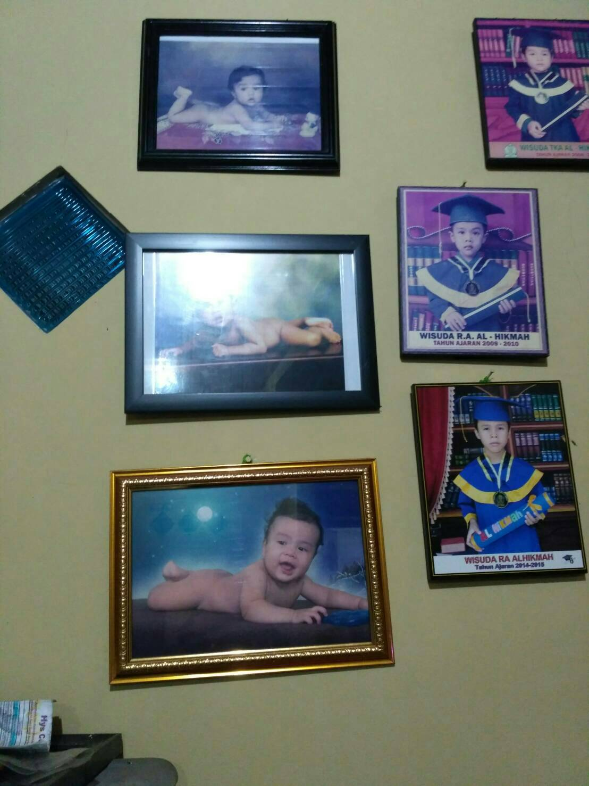
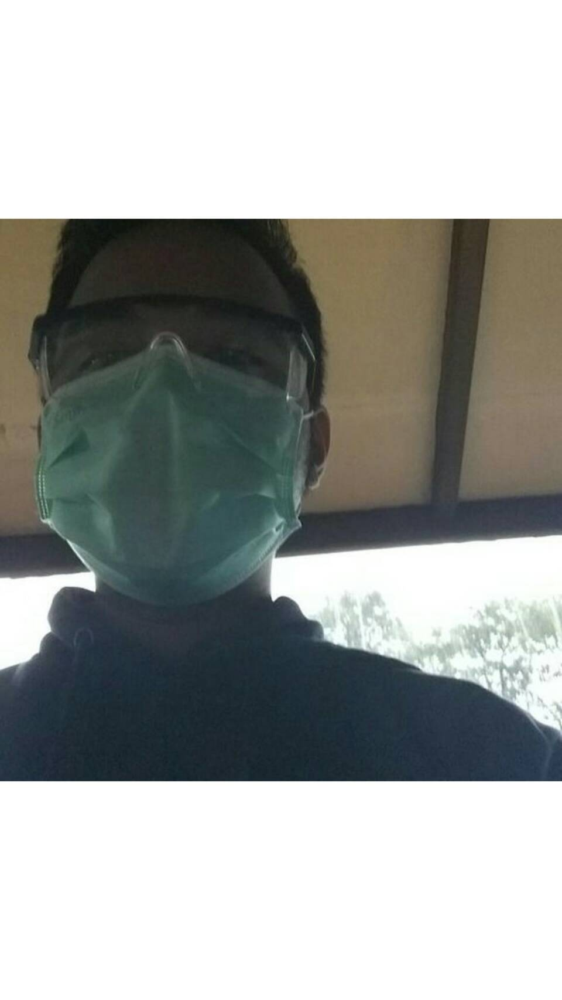
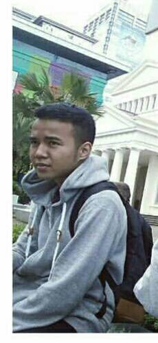
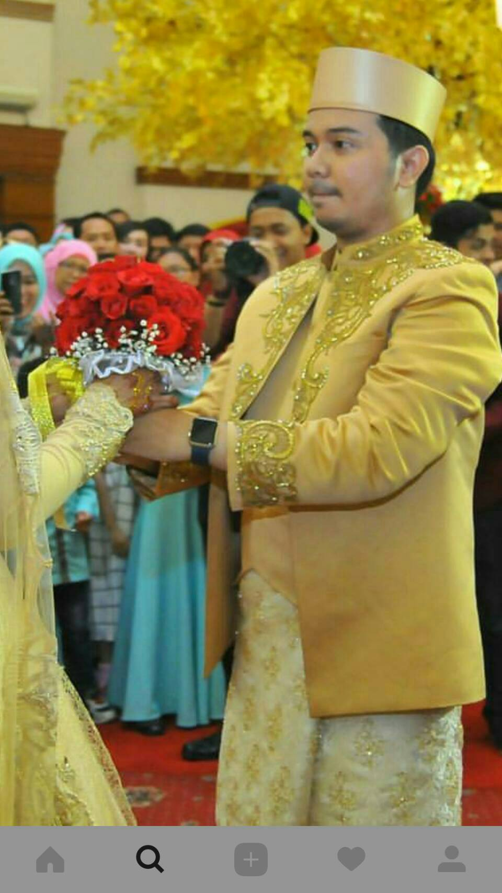
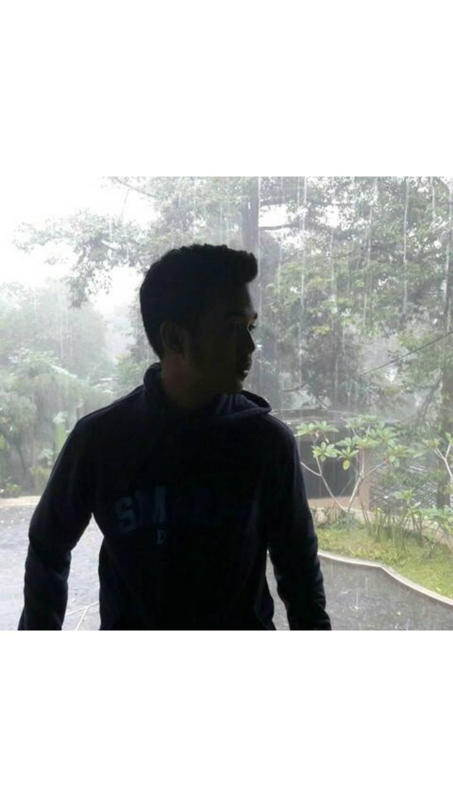
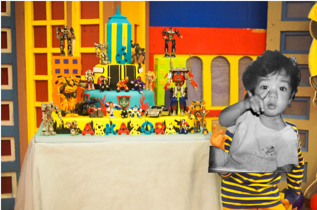

Zikri itu....
 
Zikri itu alay, lebay, receh, asik sih, aneh, baik kadang, kalo marah serem asle, bisa diajak serius, bisa diajak bercanda, pinter aamiin, suka ngestalk fb orang lain, suka ngambil foto aib, gajebo, gabisa diem, bawel, rese.
PERTAMA KALI KETEMU
Pertama kali ketemu tuh pas MPLS, sopran:) Baris diantara Rapli sama Cahya. Udah sih gitu doang:) Terus gua mau cerita nih. Waktu itu tuh hari Senin, ga tau tanggal berapa, pokonya awal awal kelas 10. Nah biasanya tuh gua ke sekolah lewat Cilendek dan entah ada angin apa pas dari lampu merah papa gua lurus aja ke arah jalan baru. Dulu sih gua ga protes, soalnya kan sekalian nyari suasana baru bosen lewat pasar mulu dan gua ga tau kalo jalan baru tuh macet. Dan ternyata MACET saudara-saudara. ITU MACET SE MACET MACETNYA JALAN MACET. MANA HARI SENIN. UPACARA. Panik dong gua. 15 menit lagi jam 7 dan gua masih kena macet. Udah pasrah dah gua. Terus gua celingak-celinguk gitu siapa tau ada anak SMAKBO juga jadi gua ga sendirian dijemurnya:) Dan ga lama setelah itu ada segerombolan anak smakbo yang kena macet juga, terus kaya konvoi. Yodah tuh papa gua jadi ikutan konvoi. Nah, pas gua perhatiin ada yang kaya gua kenal gitu. Pas gua nengok bener ternyata kawan kawan! Tau ga siapa? IYA ZIKRI. Terus gua dengan wajah yang ceria nyapa dia "ZIKRIIIIII" tapi balesannya tuh ga sesuai sama yang gua harapin. Gua kira dia bakal nyapa juga atau apakek. Tapi, ternyata JAUUUUHH dari itu. Zikri cuma diem natap gua pake tatapan yang seakan nanya "LAH U SIAPA?".PANIK DONG GUA. "MAMPUS SALAH ORANG MAMPUUSSS". Gua TAKUT dong. GIMANA KALO DIA KAKEL. GIMANA KALO DIA KAKEL YANG GALAK. GIMANA KALO DIA OM OM PAKE PUTIH PUTIH. GIMANA KALO.... AH OTAK GUA MAU MELEDAK MIKIRINNYA. Terus dia nyusul motor gua. Terus kaya liat dari spionnya gitu nyari tau yang tadi manggil dia tuh siapa. Gua mah nunduk aja pura pura main hp. TAKUT WOI. Dan ternyata dia beneran anak smakbo cuy bukan om om. Rada setitik lebih lega sih. Nah pas nyampe di smakbo tuh ternyata dia masih di parkiran nangkring di motornya. SUMPAH. Gua tungguin dia ga turun turun, seakan akan dia nungguin gua lewat. Padahal kelas gau tuh tinggal lurus doang terus nyampe. LURUS DOANG GENGS. Mana udah telat yak. Yakali gua muter dulu. Ga sempet. Yaudah gua memberanikan diri aja lewatin dia. SUMPAH JANTUNG GUA DUGEMAN TJOY. DIA NGELIATIN GUA SOALNYA. GUA MAIN HP AJA SAMBIL JALAN. DUH MAMPUS. GUA TAKUT DIA KAKEL. GUA ISTIGHFAR DALEM HATI. DOA JUGA MUDAH MUDAHAN DIA EMANG SI ZIKRI. Terus pas gua udah deket, dia turun dari motor terus sejajarin jalan sama gua. GUA NOLEH, DAN BENER zIKRI. ALHAMDULILLAH YA ALLAH. INGIN SUJUD SYUKUR RASANYA. Terus dia dengan santainya bilang "Oh tadi itu lu. Gua kira siapa." "SUMPAH WOI GUA KIRA GUA SALAH ORANG."ucap gua. "Kalo tau gitu tadi botol minum lu gua ambil." ucapnya dengan muka tanpa dosa. DAN GUA BERDOA UNTUK MINTA KEKUATAN IBUNYA MALIN KUNDANG SUPAYA BISA NGUTUK NI ORANG JADI BATU DENGAN SEGERA. KZL. Terus kita masuk ke kelas masing-masing. Dan pas nyampe gua cek tas dan ternyata gua ga bawa buku tajwid. Entah gua kenapa apes banget hari itu. Terus gua chat ke grup angkatan. Nanya ada yang bawa buku tajwid atau engga. Terus si zikri ngechat gua dan minjemin buku tajwid. Udah sih gitu doang. YEAY. TAMAT.
UCAPAN SELAMAT ULANG TAHUN
Barakallah fii umrik..semoga Allah memberkahi sisa umurmu , menjadi pribadi lebih baik lagi, selalu beruntung dan dimudahkan segala urusan.-Kanjeng Mami
Habedee buat co kedis, yang paling suka php, sok cool sok gans padahal engga, muka tua, yang akhirnya legal Juga hari ini, yang suka curhat pas di motor, yang takut sama kecoa, yang gasuka cuci piring, yang kalo pengen beli sesuatu lama banget milihnya, yang gasuka makan olahan terong, yang gen dominannya nurun dari bapak, mukanya serem tapi ngajak ribut, yang selali dibandingin sama gua dari tk dan sekarang gua yang dibanding bandingin. Semoga makin baik, makin ga serem, makin ga php, makin sholeh, makin berbaktii sama ortu dan berguna bagi bangsa dan negara anjay. -Almira Rafelia, temen dari TK
HBD p*l*r. udh. satu lagi. jangan lupa eating eating. -bleng024, temen dari SD
HBD KIKIIII! Makin sholeh, makin sayang dan nurut sama mama papa, makin sayang sama dek adek, makin rajin, makin sering ngasih permen kaki, jadi pribadi yang semakin baik. Semoga bahagia dunia akhirat. Aamiin. -permen kaki
PESAN BUAT KIKI
Jangan takut badut, cukur bulu kakinya, bewoknya cukur, jgn "nonton" wae -bleng024
Jangan ngebut ngebutan mulu kalo bawa motor, jangan lupa permen kaki, kalo lagi bawa motor jangan main hp, SEMANGAT BUAT SOCNYA! SEMANGAT JUGA BUAT KEDEPANNYA! JANLUP 26 APRIL LILIN 16. -permenkaki
Oh iya maapin kalo gua sering ngerepotin hehe
SEKALI LAGI, HAPPY SWEET 17th KIKIIII!